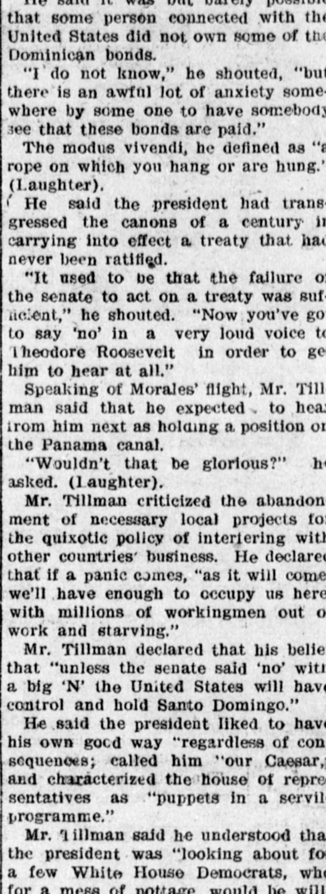
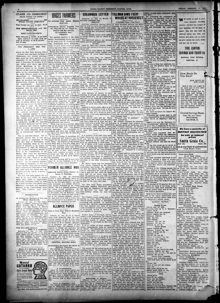

I 'do not know," ho shouted, "but there Is an awful«No lo sé», gritó, «pero hay un espantoso
The Stark County Democrat. Canton, Ohio, January 19, 1906. Page 4. Published by W. & G. Dunbar, Jr. A weekly newspaper, 1833–1912.The Stark County Democrat. Canton, Ohio, 19 de enero de 1906. Página 4. Publicado por W. & G. Dunbar, Jr. Periódico semanal, 1833–1912. View the originalVer el original


See the full pageVer la página completaThe Stark County Democrat reported on a Senate speech by Senator Benjamin Tillman condemning President Roosevelt's Dominican policy and the enforcement of the unratified customs treaty. Tillman criticized the administration for prioritizing European bondholders and ridiculed the executive modus vivendi as an unconstitutional usurpation of Senate authority. Warning against imperial expansion, Tillman asserted that unless the Senate firmly rejected the administration's actions, the United States would permanently dominate and occupy Santo Domingo.El Stark County Democrat informó sobre un discurso en el Senado del senador Benjamin Tillman, en el que condenó la política dominicana del presidente Roosevelt y la aplicación del tratado aduanero no ratificado. Tillman criticó al gobierno por priorizar a los tenedores de bonos europeos y ridiculizó el modus vivendi ejecutivo como una usurpación inconstitucional de la autoridad del Senado. Al advertir contra la expansión imperialista, Tillman aseveró que, a menos que el Senado rechazara firmemente las acciones del gobierno, los Estados Unidos dominarían y ocuparían de forma permanente a Santo Domingo.